Tutorial 1: Theta Phase Precession Analysis
This tutorial walks you through a complete neuroscience analysis workflow in SynapChart — from a raw recording to batch processing across multiple sessions.
By the end you will have:
- Loaded and run a template theta phase precession workflow
- Created a custom block that computes a quantitative metric
- Packaged the entire workflow as a reusable composite block
- Applied that composite block to two recording sessions in parallel
Estimated time: 30–45 minutes
Data: Three synthetic hippocampal recording sessions generated by a script in the repository (scripts/)
Before you begin
Make sure SynapChart is installed and running. If not, follow the Getting Started guide first — it covers installation and a full tour of the interface.
Part 1 — Get the Test Data
A generator script in the repository's scripts/ folder produces three synthetic hippocampal recording sessions. Each session contains three files:
| File | Contents |
|---|---|
phase_precession_N_lfp.npy |
Multi-channel LFP recording (1250 Hz) |
phase_precession_N_spikes.npy |
Spike timestamps for one place cell (seconds) |
phase_precession_N_position.npy |
Animal position: columns are time, x, y (30 Hz) |
where N is 1, 2, or 3. You can use any session for Parts 1–3.
Generate the files by running, from the repository root:
python scripts/generate_phase_precession_data.py
The files are written into the scripts/ folder. (The example data and templates
live in the GitHub repository, not in
the pip package — see Getting Started
for the clone-and-run setup.)
Part 2 — Run the Template Workflow
2.1 Load the template
In the toolbar click Templates, expand the Tutorial category, and select theta_phase_precession.

The canvas loads a pre-built pipeline with 10 connected blocks:
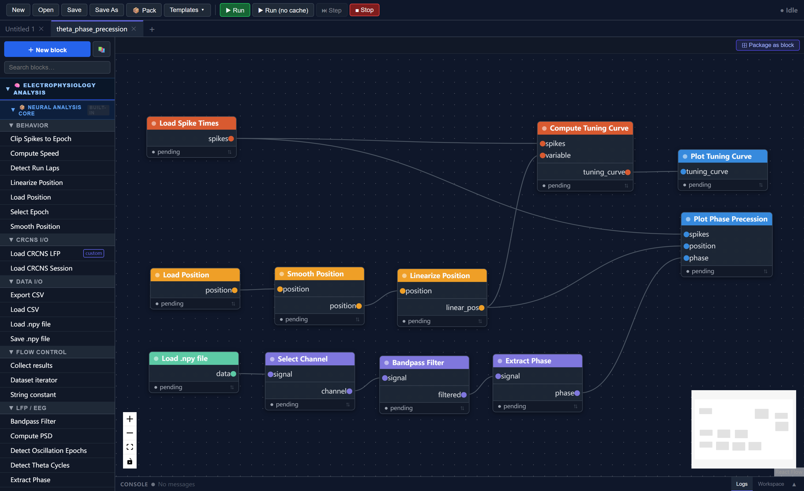
The workflow implements this analysis chain:
Load LFP ──► Select channel ──► Bandpass (4–12 Hz) ──► Extract phase
│
Load spikes ──────────────────────────────────────────► Phase precession plot
│ │
└──► Compute tuning curve ──► Tuning curve plot
▲
Load position ──► Smooth ──► Linearize
What each stage does:
- Load LFP / spikes / position — reads the three
.npydata files from disk - Bandpass filter (4–12 Hz) — isolates the theta oscillation from the raw LFP
- Extract phase — computes instantaneous theta phase via the Hilbert transform
- Smooth & linearize position — smooths the raw position trace and projects 2D coordinates onto the 1D track axis
- Compute tuning curve — calculates firing rate as a function of position (the place field)
- Plot tuning curve — displays the place field
- Plot phase precession — scatter plot of spike phase vs. position, showing that spikes systematically shift earlier in the theta cycle as the animal crosses the place field
2.2 Set the file paths
Three blocks need file paths pointing to your data. Double-click each one to open its parameter editor:
| Block | Parameter | Value |
|---|---|---|
| Load LFP | file_path |
path to phase_precession_N_lfp.npy |
| Load spike times | file_path |
path to phase_precession_N_spikes.npy |
| Load position | file_path |
path to phase_precession_N_position.npy |
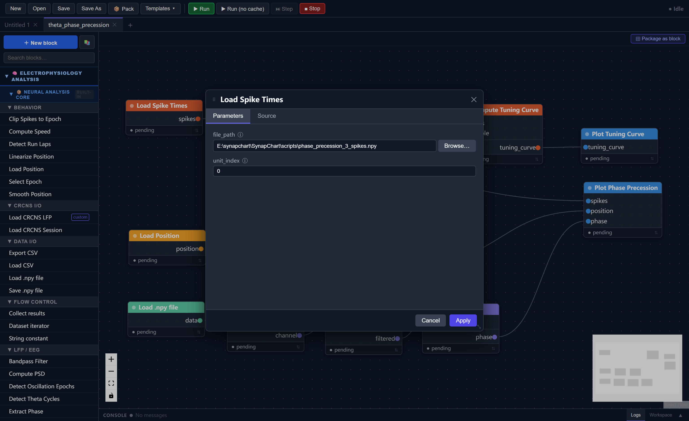
2.3 Run the pipeline
Click Run in the toolbar. The run progress panel expands at the bottom and shows each block executing in order.
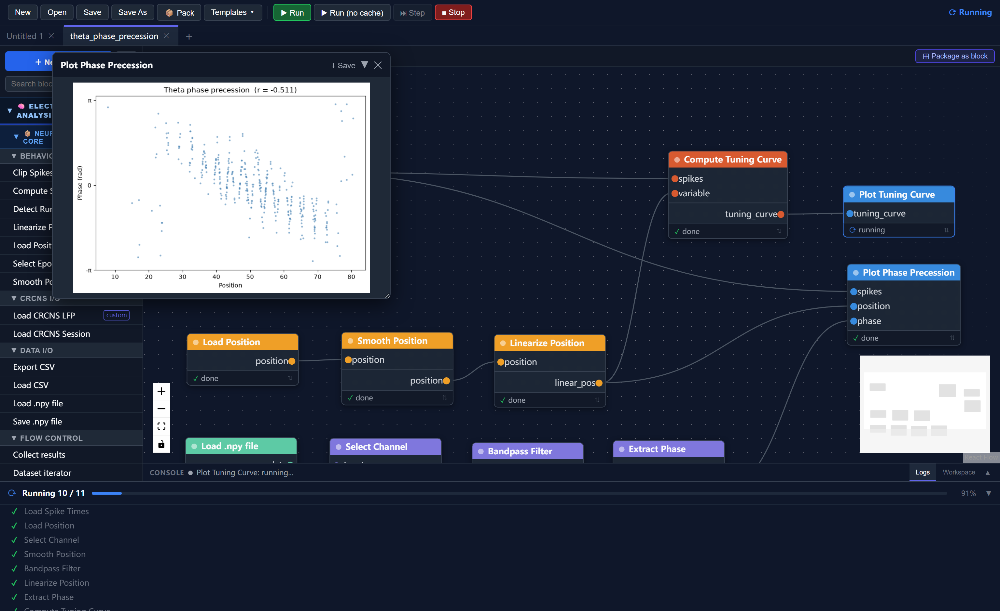
When complete, two visualization windows appear:
- Place field — firing rate as a function of position along the track
- Theta phase precession — each dot is one spike; the downward slope shows that spikes shift to earlier theta phases as the animal moves through the place field
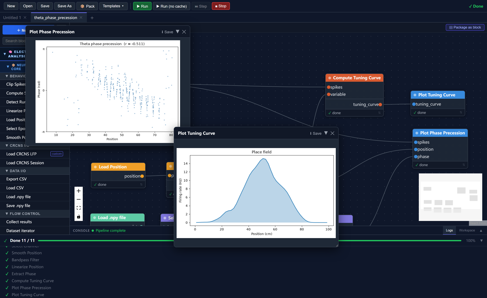
Tip
On subsequent runs, unchanged blocks load from cache automatically — only modified branches re-execute. Change a parameter and only the downstream blocks re-run.
Part 3 — Creating a Custom Block
The template visualises phase precession qualitatively. Here you will create a block that quantifies it: computing the Pearson correlation coefficient between spike phase and position. A more negative value indicates stronger phase precession.
3.1 Open the block wizard
Click + New Block at the top of the side panel.
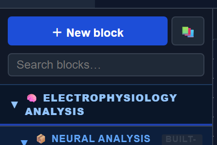
3.2 Step 1 — Metadata
| Field | Value |
|---|---|
| Block name | Get Phase Precession R |
| block_type_id | get_phase_precession_r (auto-filled) |
| Category | Visualization |
| Description | Computes Pearson correlation between spike phase and position as a measure of phase precession strength. |
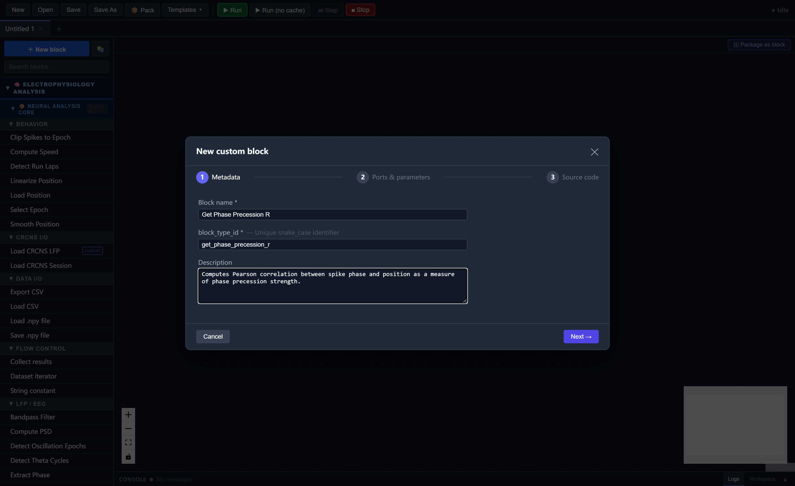
Click Next.
3.3 Step 2 — Ports & Parameters
Inputs — add three rows:
| Port name | Data type | Description |
|---|---|---|
spikes |
NeuroData[spike_times] |
Spike timestamps |
phase |
NeuroData[raw_signal] |
Instantaneous LFP phase |
position |
NeuroData[position] |
Linearized position |
Outputs — add one row:
| Port name | Data type | Description |
|---|---|---|
corr_r |
float |
Pearson r (phase vs. position) |
Parameters — leave empty.
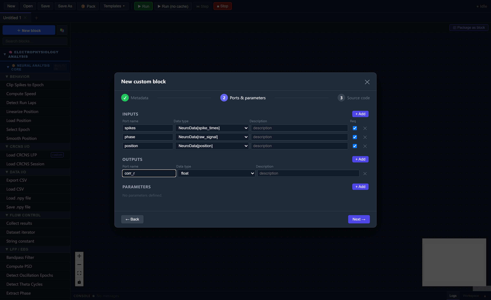
Click Next.
3.4 Step 3 — Source Code
Replace the template body with:
spikes = inputs["spikes"]
phase_nd = inputs["phase"]
position = inputs["position"]
spike_times = spikes.array
# Get phase and position arrays
phase_arr = phase_nd.array if phase_nd.array.ndim == 1 else phase_nd.array[:, 0]
pos_arr = position.array if position.array.ndim == 1 else position.array[:, 0]
# Build time axes
sr_phase = phase_nd.sampling_rate or 1000.0
sr_pos = position.sampling_rate or 30.0
phase_times = phase_nd.timestamps if phase_nd.timestamps is not None \
else np.arange(len(phase_arr)) / sr_phase
pos_times = position.timestamps if position.timestamps is not None \
else np.arange(len(pos_arr)) / sr_pos
# Interpolate phase and position at each spike time
spike_phases = np.interp(spike_times, phase_times, phase_arr,
left=np.nan, right=np.nan)
spike_pos = np.interp(spike_times, pos_times, pos_arr,
left=np.nan, right=np.nan)
# Drop spikes outside the recorded range
valid = ~(np.isnan(spike_phases) | np.isnan(spike_pos))
spike_phases = spike_phases[valid]
spike_pos = spike_pos[valid]
# Pearson correlation — negative r means phase decreases as position increases
corr_r = float(np.corrcoef(spike_phases, spike_pos)[0, 1])
disp(f"Phase precession r = {corr_r:.4f}")
return {"corr_r": corr_r}
Built-in helpers
numpy is always available as np. disp() prints to the run progress console.
Click Test Run to verify the block works, then Save Block.
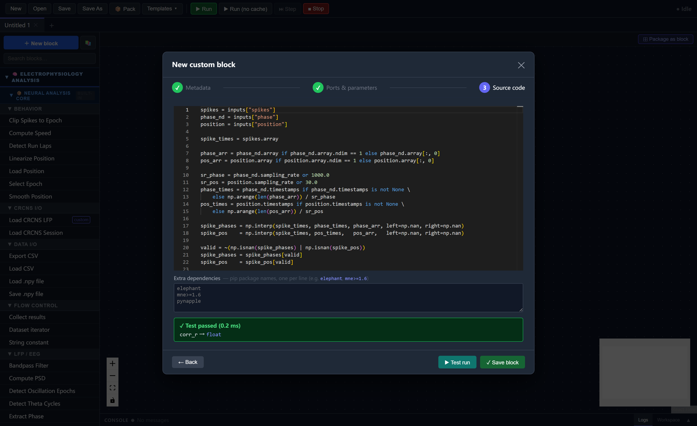
3.5 Connect the new block
Drag Get Phase Precession R from the side panel onto the canvas. Connect its inputs:
| From block | Port | → | To port |
|---|---|---|---|
extract_phase |
phase |
→ | phase |
load_spike_times |
spikes |
→ | spikes |
linearize_position |
linear_pos |
→ | position |
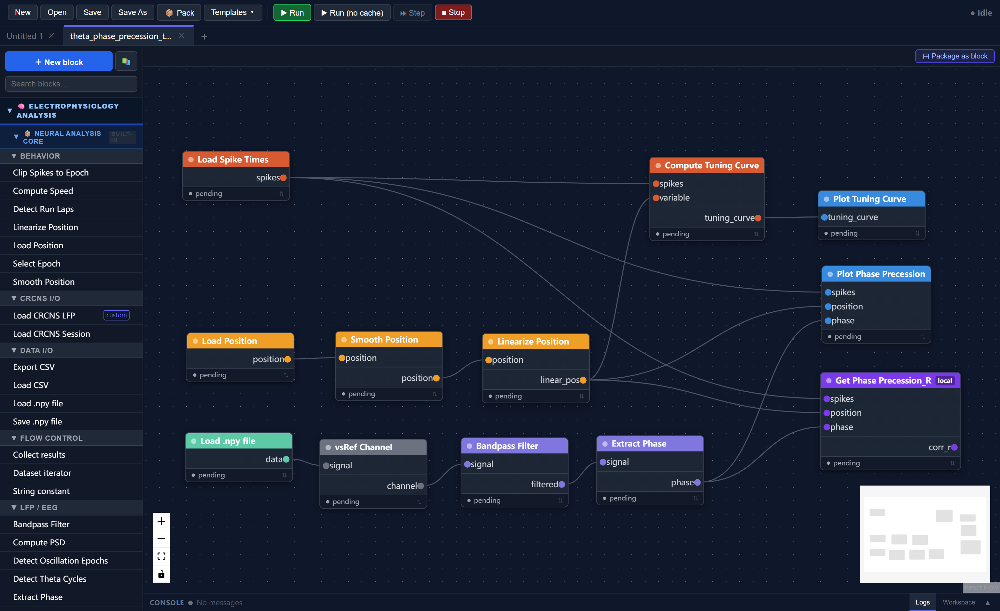
3.6 Save and run
Save as theta_phase_precession_test1.json. Click Run. The progress panel prints:
Phase precession r = -0.3821
A more negative value indicates stronger phase precession.
Part 4 — Composite Blocks and Multi-Session Analysis
You now have a complete working workflow. Here you will package it as a composite block — a single reusable node that encapsulates the entire pipeline — and use it to process two sessions in parallel.
4.1 Package the workflow as a composite block
With theta_phase_precession_test1.json open, click ⊞ Package as block in the canvas tab bar.
Step 1 — Promote file path inputs
Check all three file path parameters to expose them as input ports:
| Promote | Node | Parameter | External port label |
|---|---|---|---|
| ☑ | Load LFP | file_path |
lfp_path |
| ☑ | Load spike times | file_path |
spike_path |
| ☑ | Load position | file_path |
pos_path |
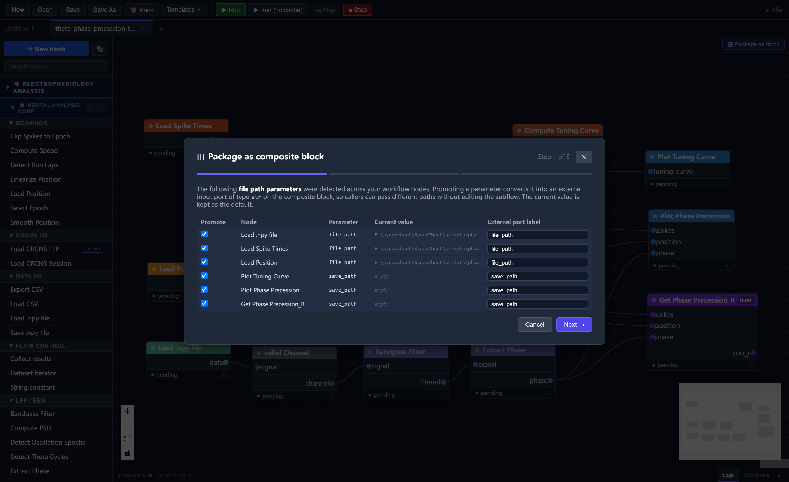
Step 2 — Select output ports
Check corr_r to expose it as an output:
| Include | Node | Port | External label |
|---|---|---|---|
| ☑ | get_phase_precession_r | corr_r |
corr_r |
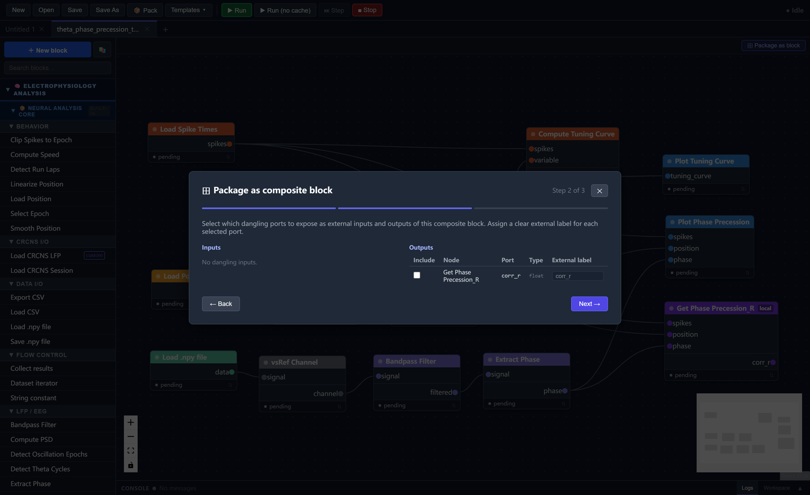
Step 3 — Metadata
| Field | Value |
|---|---|
| Block name | PhasePrecession |
| block_type_id | phaseprecession |
| Category | Composite |
| Description | Full theta phase precession pipeline. Accepts three file paths and outputs the phase-position correlation coefficient. |
Click Save composite block. The block appears in the side panel under Composite.
4.2 Build the multi-session workflow
Click New in the toolbar to start a fresh canvas.
Add two PhasePrecession composite blocks — drag PhasePrecession from the side panel twice.
Add six String constant blocks — find String constant under Flow control and add six. Set their value parameters:
Session 1:
| Value |
|---|
C:\path\to\scripts\phase_precession_1_lfp.npy |
C:\path\to\scripts\phase_precession_1_spikes.npy |
C:\path\to\scripts\phase_precession_1_position.npy |
Session 2:
| Value |
|---|
C:\path\to\scripts\phase_precession_2_lfp.npy |
C:\path\to\scripts\phase_precession_2_spikes.npy |
C:\path\to\scripts\phase_precession_2_position.npy |
Replace C:\path\to\scripts\ with the actual path to the repository's scripts/ folder on your machine.
Connect the string constants to the matching ports on each composite block (lfp_path, spike_path, pos_path).
Add an average_values local block — click + New Block and create:
- Name:
average_values - Inputs:
r1(float),r2(float) - Output:
rave(float) - Source code:
r1 = float(inputs["r1"])
r2 = float(inputs["r2"])
rave = float((r1 + r2) / 2)
disp(f"averaged_corr_r = {rave:.4f}")
return {"rave": rave}
Connect both composite blocks' corr_r outputs to r1 and r2.
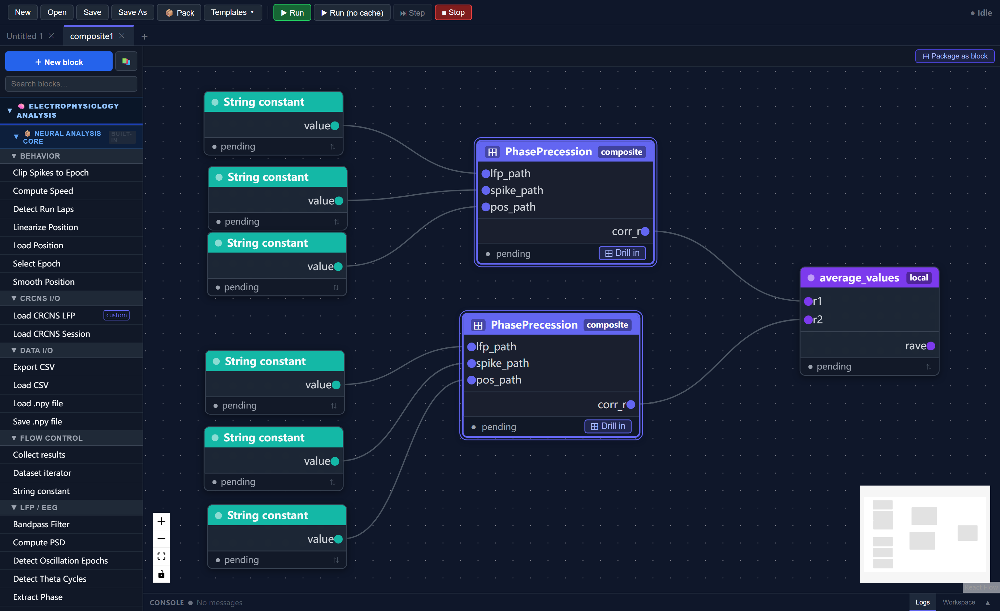
4.3 Save and run
Save as composite1.json. Click Run.
Both PhasePrecession blocks execute their full internal pipelines. The progress panel prints:
[PhasePrecession / session 1] Phase precession r = -0.3821
[PhasePrecession / session 2] Phase precession r = -0.4103
averaged_corr_r = -0.3962
Drilling into a composite block
Click the ⊞ Drill in button at the bottom of any composite node to inspect its internal workflow in a nested canvas tab. Double-click any internal block to edit its parameters without leaving the view.
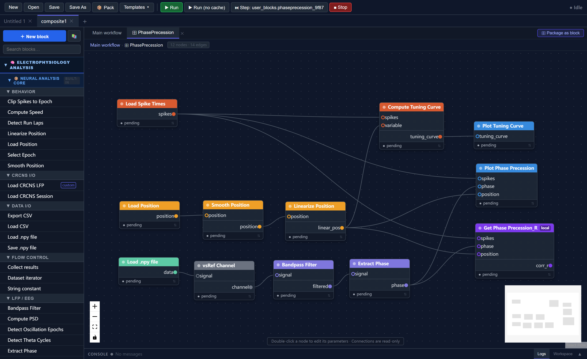
Summary
In this tutorial you:
- Ran a template theta phase precession workflow on synthetic hippocampal data
- Created a custom
get_phase_precession_rblock quantifying precession strength as a Pearson correlation - Packaged the workflow as a
PhasePrecessioncomposite block with promoted file path inputs and acorr_routput - Built a two-session parallel analysis that averages the correlation across sessions
Next Steps
- Tutorial 2: Using the dataset iterator to batch-process all three sessions automatically with a CSV file
- Tutorial 3: Theta sequences with real hippocampal data — loading a CRCNS HC-11 session and analyzing direction-specific neural dynamics
- Block Reference — full documentation of all built-in blocks and their parameters